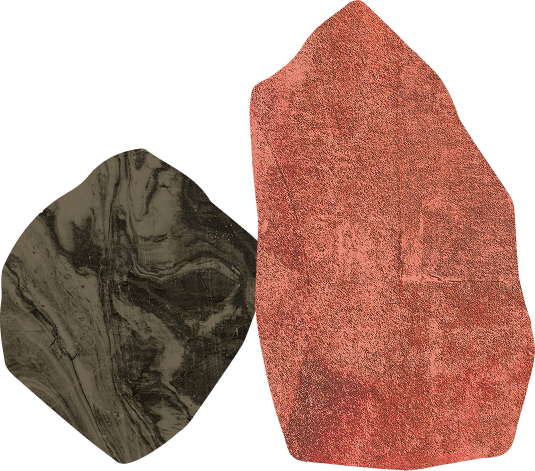
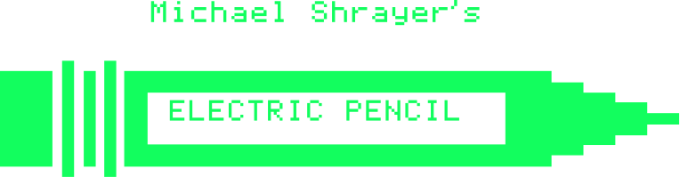

It was the first word processor that if we travelled back in time we would recognise as such.
We are 50 years later now. And the things Michael made back then – from word wrap to search and replace – somehow still constitute the state of the art.